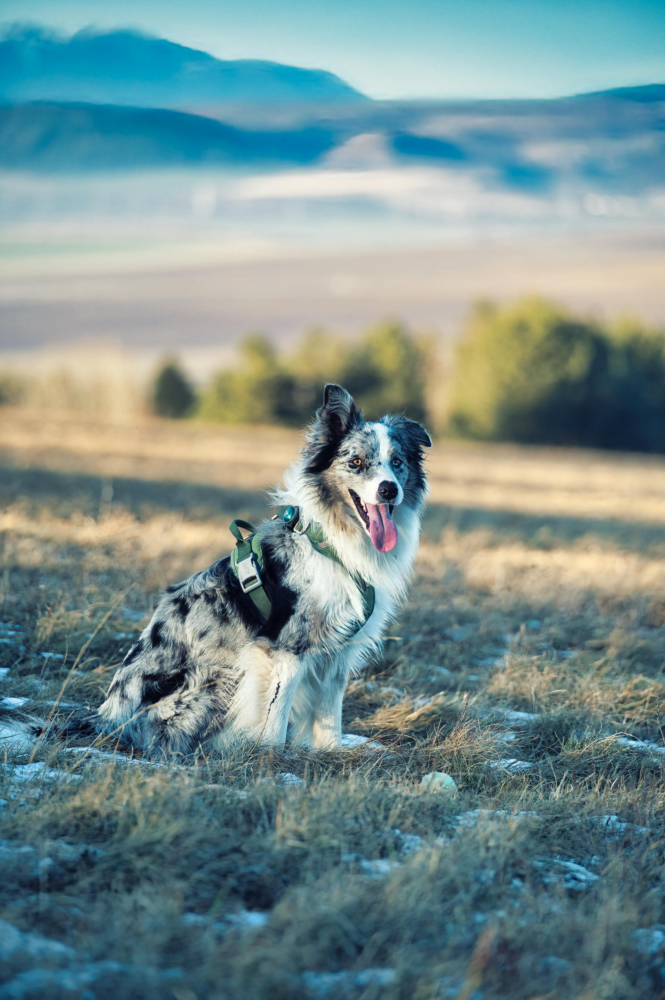

Duy’s Introduction

Hello from Duy Doan
Hello! My name is Duy Doan. I was born in Vietnam and later moved to Seattle. I will be a junior, currently pursuing Pure Mathematics and Computer Science. However, I’m considering switching to Statistics and Math with a Computer Science minor, since I’ve realized that working at McDonald’s isn’t the best long-term plan for me.
Interests
While I’ve mostly approached math as a tool to solve real-world problems through data-driven methods, I’ve found myself particularly drawn to linear algebra. My background in data analysis—through both coursework and personal projects—has shown me how powerful linear algebra can be for modeling and interpreting complex systems. I’m excited to deepen my understanding and apply these concepts more effectively
Plans
My plans right now is to do get into grad school for mathematics with a specialization in Free probability and von Neumann algebra.
Why data science?
Everything needs data, and not-so-good data would probably end up as not-so-good results. So personally, I want to understand data, what they mean, what can I do with it, how it can be manipulated so that we can use it correctly.
Prior experiences
Zero with data science, but I have worked with free probabilities which utilizes data and variables that are extracted from datasets.
More about me
Outside of academics, I used to do wrestling in high school and am currently working to get my purple belt in jiujitsu.
Fun fact
I usually go from 205lbs to 135lbs before all of my MMA competitions.
Personal Learning Objectives
The skill I value the most is resillience.
Skills I want to develop during DSPG
- Advanced data visualization techniques
- Interpreting datasets
- Mathematical modelling
Why these skills matter
They are essential for turning data into actionable insights and for working effectively in teams.
How I hope to improve
By working on real projects, seeking feedback from mentors and peers, and consistently practicing new techniques.